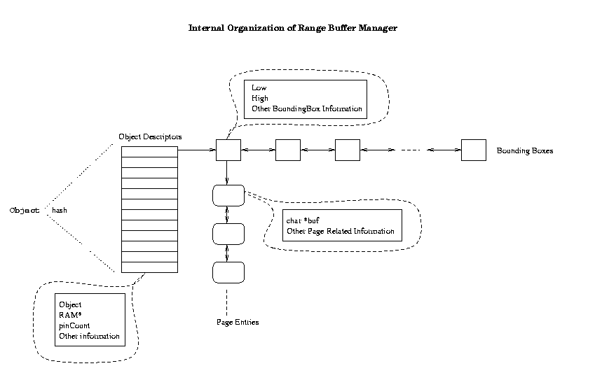

Range Buffer Manager

This document specifies the current interfaces and internal data structures of the Range Buffer Manager.
1. API
1.1 Range Access Method (RAM)
Range Access Method is a generic class of access methods. It provides an
record-oriented iteration interface. User of Range Access Method can open
a scan with an Range Access Method. After that, user can ask for one more
record in each "getNext" call. Finally, user must close the scan. This
iteration interface will return all records that satisfy a query. It does not,
however, guarantee any order among the records returned.
RangeAccessMethod is an abstract class that implements Range Access
Method.
Detailed Interface Specification
1.2 Range Buffer Manager Access Method (RBM-AM)
Range Buffer Manager Access Method is a special case (a derived class) of
Range Access Method. It provides the same iteration interface mentioned above.
Internally, Range Buffer Manager Access Method keeps track of records cached
in memory and return them as early as possible whenever there is a query. In
addition, Range Buffer Manager Access Method has a handle to a low level
Range Access Method so that if not all the records need are cached in memory,
it can go to the low level to ask for more records. Once those records are
returned, Range Buffer Manager Access Method will return them to satisfy the
query. If it can find space in memory, Range Buffer Manager Access Method will
also try to cache these additional records.
RangeBufferManagerAccessMethod is a class that implements Range Buffer
Manager Access Method.
Detailed Interface Specification
1.3 Range Buffer Manager (RBM)
Range Buffer Manager is the data structure that actually keeps track of all
records in memory. The internal structure is specified in section 2. Externally,
one Range Buffer Manager can have one or more than one Range Buffer Manager
Access Methods on top of it, each running queries on possibly different
objects (as shown in the following figure). In a sense, Range Buffer Manager
Access Methods is like a wrapper around Range Buffer Manager. Range Buffer
Manager Access Methods uses the data structure in Range Buffer Manager and
provides the outside world an iteration interface.
RangeBufferManager is a class that implements Range Buffer Manager.
Detailed Interface Specification
2. Internal Structure
2.1 Overall Organization (RBM)
Records are associated with objects. So in other words RangeBufferManager
keeps track of objects. RangeBufferManager has a hash table to keep all
the object descriptors. Besides an pointer to the object itself, a
object descriptor keeps the following information:
A pointer to another RAM. This RAM is where you can get more records
if not all the records are in memory.
number of bounding box entries and the doubly linked list of
the bounding box entries.
A pin count, indicating if the object is in use or not.
A bounding box entry keeps track of 0 or more pages which contain the real
records. For example, if it is a one dimensional bounding box ,
all records in the pages associated with this entry will have the value between
low and high on that certain attribute. Records within a certain page, or
among pages in the list for this bounding box, however, are not ordered in
any way.

2.2 Object
As mentioned, RBM keeps track of objects. An object is a collection of records
of the same schema and with the same bounding box attribute. Records can be
variable length.
Any program that uses the Range Buffer Manager (call the managing program)
is responsible for creating, managing and deleting objects. By creating an
object, an integer (typedef int RBMObject) will be generated that uniquely
identifies this object until it is deleted. This integer will be used
throughout the lifetime of this object. Given this integer, the managing
program should be able to uniquely identify all highest level information
about this object, including the bounding box attribute.
3. Technical Details
All Range Buffer Manager related programs have been checked into DEVise CVS
under src/range-buffer.
Directories: src/ has all the source code. inc/ has a header for common
definitions. dat/ has data files for the demo. doc/ is the documentation
directory. obj/ and bin/ are for object files and binary files, respectively.
Compile: go to src/ and type "make demo". This will generate the demo
executable.
Run: go to bin/ and type "demo < ../test.in". This will generate output that
shows several different queries answered by the Range Buffer Manager system.
For very detailed information about the source code, please go to the header
files in src/.
4. Acknowledgement
The part of the management of records within pages and related stuff is
borrowed from Kevin Beyer's DTE ADT.
Created by Liping Zhu (liping@cs.wisc.edu) in December 1998.